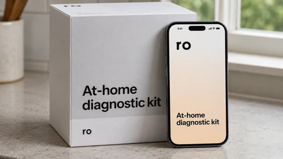

Financial news, market analysis and technology
Top Story
Market Analysis View all →

Market Analysis
U.S. Consumer Sentiment Rises to 51.0, but Cost Pressures Persist
The University of Michigan's preliminary November index rose three points, while inflation expectations eased and worries about living costs remained widespread.

Market Analysis
Global Equity Funds Draw $38.63 Billion Even as AI Stock Rout Shakes Markets
Global equity funds added $38.63 billion in the week to November 4, even as technology shares and AI spending worries unsettled markets.

Market Analysis
U.S. Adds 165,000 Jobs as Upward Revisions Strengthen the Hiring Picture
October hiring exceeded expectations, but a rise in involuntary part-time work complicates the message for households and the Federal Reserve.

Market Analysis
British Airways Owner IAG Earns More Revenue but Less Profit as Fuel Costs Climb
Third-quarter revenue rose 4.5%, but operating profit fell 15.9%. Premium demand and fuel hedges have cushioned the pressure without eliminating it.
Tech & AI View all →
Tech & AI
USDA Adds AI Checks to Crop Reports After Corn Data Error
The department plans to use an internal AI tool to flag anomalies ahead of its November 10 crop report, following incorrect September corn-yield calculations.

Tech & AI
Microsoft Reportedly Winds Down Oracle AI Capacity Deal as Chip Needs Change
Microsoft is reportedly winding down rented Oracle AI capacity as requirements shift; neither company confirmed the contract details.

Tech & AI
Telehealth Firm Ro Launches AI Research Lab, Seeks Drugmaker Partnerships
Ro plans to study patient outcomes and is discussing pharmaceutical partnerships. The commercial opportunity depends on evidence that goes beyond a large dataset.
Tech & AI
Claude Adds Bank-Account Connections, With Read-Only Access and New Privacy Boundaries
Anthropic’s U.S. Personal Finance beta can analyze connected balances and transactions. It cannot move money, and disconnecting an account does not erase earlier conversations.
Crypto View all →

Crypto
Greece Approves 10% Tax on Crypto Gains Starting in 2027
Parliament approved a 10% rate on cryptocurrency gains and a separate framework for staking and DeFi income; detailed filing guidance is still pending.

Crypto
Binance's $6.3 Billion Heist Puts Crypto Insurance Under New Scrutiny
Insurers are scrutinizing crypto exchange safeguards after a reported $6.3 billion Binance theft, while policy exclusions remain a key issue.
Crypto
Zcash Activates NU7, Cutting Block Times and Changing How Fees Fund the Network
The upgrade targets 25-second blocks and sends 60% of transaction fees into a future-reward mechanism. It also ends spending from the legacy Sprout pool.
Crypto
World Liberty Plans WLFI Buybacks, Linking Token Demand to Possible USD1 Reserve Income
The Trump-backed venture says purchases may draw on revenue from its stablecoin business. The distinction between reserve earnings and redemption assets is central to the plan.
News Feed